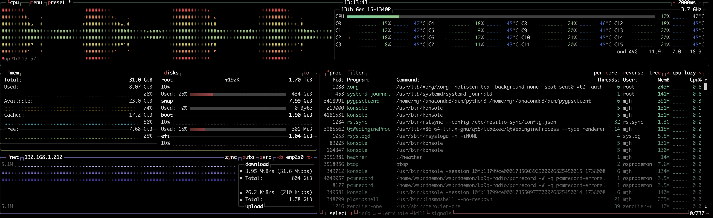

Troubleshooting wsprdaemon
Nothing ever goes wrong!
Use tmux or screen
Especially useful in managing a computer remotely. This will enable you to maintain a session between logins or should your network connection drop.
Use btop!

Use wdln
This displays the wsprnet upload log.
Use wdle
Check recordings
Change to the temporary directory.
cdt
Then enter the sub-directory for a receiver and channel, for instance, the following moves to receiver KA9Q_0 and a 20m wspr channel:
cd recording.d/KA9Q_0/20/
Here, you can invoke the wdww alias that dynamically lists the wav files for that channel. A problem exists if you don’t see regular increments of the latest file.
wdww
Check the logs
You can locate logs using something like the following command:
find . -type f -name "*.log" ! -name "*sox.log" ! -name "*error.log"
where:
“.” indicates starting the search from the current directory
“-type” directs the search only for files
“-name” specifies the filename of interest
“! -name” specifies names to exclude
logs in /var/log
/var/log/wspr.log
/var/log/ft8.log
/var/log/ft4.log
logs in ~/wsprdaemon
./wav-archive.d/grape_upload_daemon.log
./ka9q-radio_build.log
./grep.log
./ps.log
./diff.log
./git.log
./uploads.d/wsprdaemon.d/upload_to_wsprdaemon_daemon.log
./uploads.d/wsprnet.d/spots.d/upload_to_wsprnet_daemon.log
./ft8_lib_build.log
./onion-build.log
./noise_plot.log
./ka9q_web_daemon.log
./ka9q-web_build.log
./watchdog_daemon.log
./ka9q_web_service_8081.log
logs in /dev/shm/wsprdaemon
Note: the 2nd and 3rd subdirectories will vary according to your receivers and channels.
./recording.d/KA9Q_LONGWIRE/80eu/posting_daemon.log
./recording.d/KA9Q_LONGWIRE/80eu/decoding_daemon.log
./recording.d/KA9Q_LONGWIRE/80eu/find.log
./recording.d/KA9Q_LONGWIRE/80eu/metadump.log
./recording.d/KA9Q_LONGWIRE/80eu/ka9q_status.log
./recording.d/KA9Q_LONGWIRE/80eu/sox-stats.log
./recording.d/KA9Q_LONGWIRE/80eu/adc_overloads.log
./recording.d/KA9Q_LONGWIRE/80eu/sox.log
./recording.d/KA9Q_LONGWIRE/80eu/get-peak-wav-sample.log
./recording.d/KA9Q_LONGWIRE/80eu/W_120/decoding_daemon.log
./recording.d/KA9Q_LONGWIRE/80eu/wav_status.log
./recording.d/KA9Q_LONGWIRE/80eu/add_derived.log
./recording.d/KA9Q_LONGWIRE/80eu/printf.log
./recording.d/KA9Q_LONGWIRE_WWV/wav-record-daemon-all.log
./recording.d/KA9Q_LONGWIRE_WWV/pcmrecord-errors.log
./recording.d/KA9Q_LONGWIRE_WWV/pcmrecord-outs.log
./uploads.d/wsprdaemon.d/grep.log
./uploads.d/wsprnet.d/curl.log